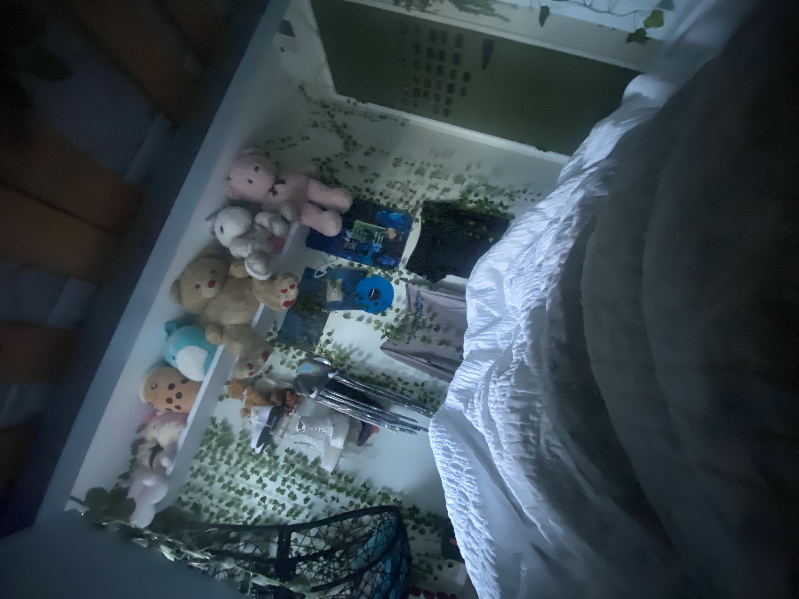
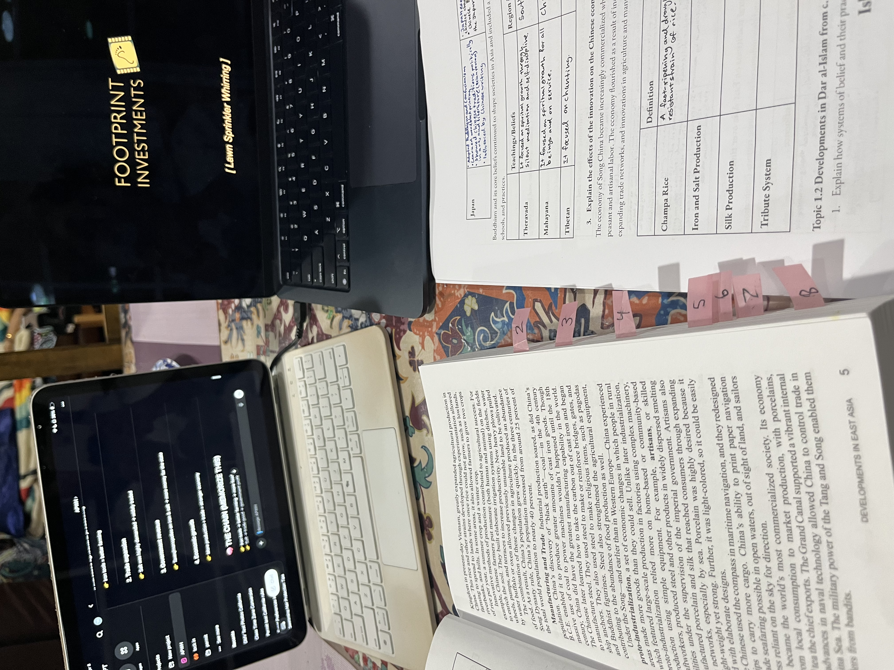

First, I turn off my alarm and then go back to sleep for a little bit. The next step is to take all the devices from off the side of my bed and move them to my backpack. Then I take my clothes to the bathroom and brush my teeth and get ready. Then, I go to my room again to put on perfume and socks. After that, I go to the kitchen to eat my breakfast. Finally, I put my shoes on and leave for school.
After I get home, I eat a snack then take a shower. This is usually a 30 minute endeavor. Usually, I watch YouTube while I eat so it takes a pretty long time. It's like unwinding time. After that, it starts to bleed into my night routine because I essentially rot on my phone until I am physically unable to stay awake or I am yelled at.
YouTube is usually what I watch when I get home.

Now, this is when the day truly begins. Usually, it is after dinner. This is when I start all my homework for the day. I start by looking at my to do list with my eyes half open and realizing that this is a minimum of 3 hours of work and I should have started earlier. Then, I procrastinate for another hour or so. Eventually, I convince myself I can finish all my work really quickly so that means I can start a little later. This continues until I finally start. I do the bare minimum while watching YouTube and tell myself that this is not happening the next day. Then, I do it all again tomorrow.